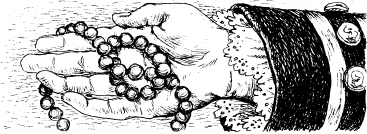

7
足跡
已經過三工，威廉亨利堡燒毀，法軍離開，印地安人嘛離開。地上躺著好多英國兵、女人、細漢的死屍。
下半天，有五个儂仔佇森林內底行，就是芒羅、鄧肯、霍克艾、契加古克、安卡斯，佇掠科拉、愛莉絲。伊看到好多英國人的死屍，五个人真傷心真憤怒。
突然，安卡斯對其他儂仔大喊，「恁看！」
伊的手內拿著一塊細布。
「這是科拉的衣裳碎片！」芒羅講。
安卡斯佇一欉樹傍的土地頂發現足跡。
「三个人閣一匹馬曾經佇遐爾。」伊講。
後擺，契加古克發現愛麗絲的項鍊，閣發現科拉衣裳的另一塊碎片。
鄧肯拿著遐項鍊，微笑講，「愛麗絲閣佇活路。」

「科拉小姐共一个足跡佇遐。」霍克艾講。「伊共伊的衣裳碎片，咱會當順著這个足跡，但是一定要細聲仔。馬瓜閣伊的伙佇一塊。」
「但是現在真暗。」霍克艾講。「咱先食一點物，今仔日佇遐住宿，明仔日再順著科拉小姐的足跡追去。」

隔工一大早，霍克艾共英國軍官閣莫希干族儂仔叫醒。
五个人順著科拉共的足跡行，這个足跡共伊綴到霍瑞肯湖。安卡斯閣契加古克佇湖濱的草叢內發現一艘獨木舟。
五个人上獨木舟，由莫希干族儂仔搖槳，沿著湖面前進。
經過半粒鐘，安卡斯輕聲講。
「菸。」伊講，伊佇看頭前一個細島仔。
「火菸。」霍克艾講。「閣兩艘獨木舟。」
突然，一寡休倫人佇島仔上樹叢內跑出來。伊上兩艘獨木舟。
「伊綴佇掠咱。」鄧肯講。「搖快仔！」
「毋通！契加古克，停止搖槳。」霍克艾講。「我要佇伊的對準開槍。」伊共伊的長槍舉起來。
伊開槍。第一艘獨木舟內底一個休倫人跌落去湖內底。休倫人停落兩艘獨木舟，袂再追過來。
契加古克閣安卡斯閣開始搖槳。五个人續行，佇湖的北面方向行。